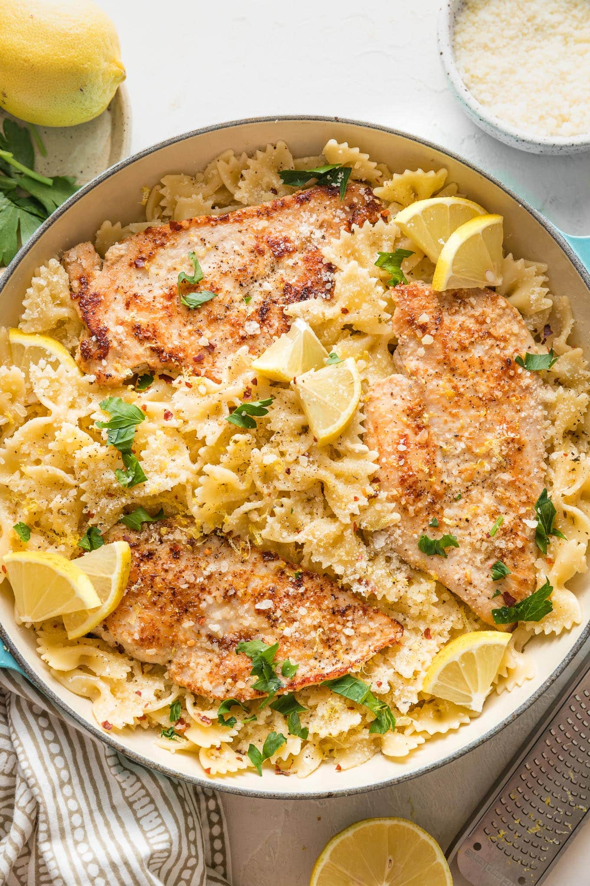

My Favorite Recipe
Creamy Lemon Chicken Pasta
Ingredients
- 1 lb. boneless, skinless chicken breasts, thinly sliced into cutlet
- 1 lb. pasta of choice
- 6 garlic cloves, mincedn
- 1 cup heavy cream
- 3/4 cup chicken broth
- 1/3 cup grated Parmigiano Reggiano cheese
- 1 Tbsp. lemon zest plus 3 Tbsp. fresh lemon juice
Instructions
- Bring a large pot of generously salted water to a boil.
- Meanwhile, prepare chicken. Place chicken in a bowl and combine with olive oil, lemon zest, and spices. Toss well to thoroughly coat both sides of chicken in seasoning. Heat a large high-sided skillet or sauté pan over medium heat. Arrange chicken in pan and cook until nicely golden and internal temperature reaches 165ºF, about 7 to 10 minutes, depending on thickness. Transfer to a plate and cover to keep warm.
- Prepare sauce. Add butter to the pan (no need to wipe clean) along with chopped yellow onion. Cook over medium heat until the onion softens, about 4 to 5 minutes. Add garlic and cook 1 to 2 minutes, until aromatic.
- Add heavy cream, broth, salt, and black pepper. Bring mixture to a simmer. Simmer, uncovered, until the mixture slightly thickens, about 5 to 6 minutes.
- Add pasta to the pan with sauce, along with 1/2 cup of the reserved pasta cooking water. Increase the heat to medium-high, and toss vigorously with a pair of tongs. Continue cooking and tossing constantly, until the pasta is glossed in a thick sauce, about 2 minutes.
- Thinly slice chicken and place on top of the pasta. Garnish with extra chopped fresh parsley, grated Parmesan, cracked black pepper, and a squeeze of lemon juice.
- Enjoy!